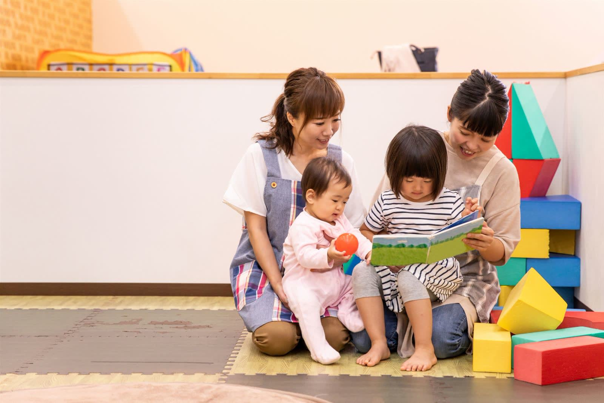

ADMISSION
入園案内

ホーム
› 入園案内
募集要項（令和9年度）
{{ a.k }}
{{ a.v }}
※ 入園の申込みは、お住まいの市区町村の窓口となります。保育料は世帯の所得に応じて自治体が決定します（3〜5歳児クラスは無償化の対象）。
入園までの流れ
{{ f.no }}
{{ f.when }}
{{ f.title }}
{{ f.text }}
園見学を予約する ➜
よくあるご質問
Q
{{ q.q }}
{{ q.icon }}
A
{{ q.a }}